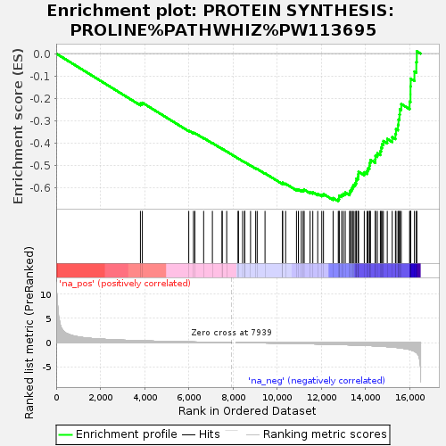
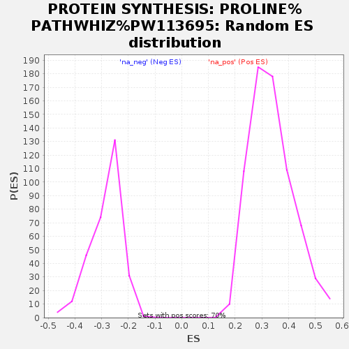

| | | Dataset | ranked_gene_list |
| Phenotype | NoPhenotypeAvailable |
| Upregulated in class | na_neg |
| GeneSet | PROTEIN SYNTHESIS: PROLINE%PATHWHIZ%PW113695 |
| Enrichment Score (ES) | -0.6622738 |
| Normalized Enrichment Score (NES) | -2.3267827 |
| Nominal p-value | 0.0 |
| FDR q-value | 0.0 |
| FWER p-Value | 0.0 |
Table: GSEA Results Summary

Fig 1: Enrichment plot: PROTEIN SYNTHESIS: PROLINE%PATHWHIZ%PW113695
Profile of the Running ES Score & Positions of GeneSet Members on the Rank Ordered List
| SYMBOL | RANK IN GENE LIST | RANK METRIC SCORE | RUNNING ES | CORE ENRICHMENT | | 1 | RPL36 | 3812 | 0.367 | -0.2235 | No |
| 2 | RPL35 | 3900 | 0.354 | -0.2205 | No |
| 3 | RPL28 | 6000 | 0.134 | -0.3452 | No |
| 4 | RPL18A | 6214 | 0.117 | -0.3554 | No |
| 5 | RPS15 | 6277 | 0.112 | -0.3565 | No |
| 6 | RPLP2 | 6674 | 0.082 | -0.3787 | No |
| 7 | RPS19 | 7070 | 0.056 | -0.4015 | No |
| 8 | RPS11 | 7510 | 0.026 | -0.4276 | No |
| 9 | RPL19 | 7512 | 0.026 | -0.4270 | No |
| 10 | RPS5 | 7718 | 0.013 | -0.4392 | No |
| 11 | RPS9 | 8230 | -0.004 | -0.4702 | No |
| 12 | RPL39 | 8251 | -0.006 | -0.4713 | No |
| 13 | RPL38 | 8439 | -0.015 | -0.4823 | No |
| 14 | RPS28 | 8530 | -0.021 | -0.4873 | No |
| 15 | RPS26 | 8537 | -0.021 | -0.4872 | No |
| 16 | UBA52 | 8797 | -0.038 | -0.5021 | No |
| 17 | RPL13 | 9029 | -0.053 | -0.5149 | No |
| 18 | FAU | 9098 | -0.057 | -0.5177 | No |
| 19 | RPL29 | 9452 | -0.080 | -0.5373 | No |
| 20 | RPLP1 | 10245 | -0.139 | -0.5823 | No |
| 21 | RPL18 | 10248 | -0.139 | -0.5791 | No |
| 22 | RPS27 | 10385 | -0.150 | -0.5839 | No |
| 23 | RPL36A | 10876 | -0.189 | -0.6093 | No |
| 24 | RPS18 | 10962 | -0.198 | -0.6098 | No |
| 25 | RPS10 | 11095 | -0.209 | -0.6129 | No |
| 26 | RPS24 | 11179 | -0.217 | -0.6128 | No |
| 27 | RPL23A | 11224 | -0.221 | -0.6103 | No |
| 28 | RPL37 | 11491 | -0.247 | -0.6207 | No |
| 29 | RPL12 | 11615 | -0.260 | -0.6220 | No |
| 30 | RPL30 | 11837 | -0.285 | -0.6288 | No |
| 31 | RPL8 | 12021 | -0.303 | -0.6328 | No |
| 32 | RPL10 | 12099 | -0.312 | -0.6301 | No |
| 33 | RPL26 | 12534 | -0.359 | -0.6481 | No |
| 34 | RPS29 | 12768 | -0.391 | -0.6531 | Yes |
| 35 | RPL32 | 12806 | -0.395 | -0.6460 | Yes |
| 36 | RPL27 | 12810 | -0.397 | -0.6368 | Yes |
| 37 | RPS13 | 12921 | -0.413 | -0.6338 | Yes |
| 38 | RPL11 | 12997 | -0.425 | -0.6283 | Yes |
| 39 | RPL37A | 13083 | -0.436 | -0.6232 | Yes |
| 40 | RPL13A | 13281 | -0.465 | -0.6242 | Yes |
| 41 | RPL35A | 13308 | -0.471 | -0.6147 | Yes |
| 42 | RPS16 | 13367 | -0.481 | -0.6069 | Yes |
| 43 | RPL41 | 13410 | -0.487 | -0.5980 | Yes |
| 44 | RPLP0 | 13453 | -0.492 | -0.5889 | Yes |
| 45 | RPSA | 13530 | -0.502 | -0.5817 | Yes |
| 46 | RACK1 | 13577 | -0.509 | -0.5725 | Yes |
| 47 | RPS17 | 13584 | -0.511 | -0.5608 | Yes |
| 48 | RPS2 | 13658 | -0.519 | -0.5530 | Yes |
| 49 | RPL17 | 13669 | -0.520 | -0.5413 | Yes |
| 50 | RPS25 | 13686 | -0.522 | -0.5300 | Yes |
| 51 | RPS15A | 13945 | -0.570 | -0.5323 | Yes |
| 52 | RPL24 | 14074 | -0.597 | -0.5260 | Yes |
| 53 | RPS21 | 14116 | -0.604 | -0.5142 | Yes |
| 54 | RPL31 | 14179 | -0.616 | -0.5035 | Yes |
| 55 | EPRS1 | 14194 | -0.618 | -0.4897 | Yes |
| 56 | RPS8 | 14225 | -0.625 | -0.4768 | Yes |
| 57 | RPL34 | 14443 | -0.675 | -0.4741 | Yes |
| 58 | RPS12 | 14450 | -0.676 | -0.4585 | Yes |
| 59 | RPL27A | 14535 | -0.704 | -0.4471 | Yes |
| 60 | RPL10A | 14673 | -0.741 | -0.4379 | Yes |
| 61 | RPS14 | 14707 | -0.748 | -0.4223 | Yes |
| 62 | RPL3 | 14747 | -0.759 | -0.4067 | Yes |
| 63 | RPS7 | 14809 | -0.778 | -0.3921 | Yes |
| 64 | RPL14 | 14985 | -0.842 | -0.3829 | Yes |
| 65 | RPS4X | 15209 | -0.920 | -0.3748 | Yes |
| 66 | RPS3 | 15355 | -0.980 | -0.3605 | Yes |
| 67 | RPL22 | 15380 | -0.989 | -0.3387 | Yes |
| 68 | RPS3A | 15470 | -1.040 | -0.3196 | Yes |
| 69 | RPL4 | 15494 | -1.052 | -0.2961 | Yes |
| 70 | RPL21 | 15537 | -1.075 | -0.2733 | Yes |
| 71 | RPL7A | 15558 | -1.083 | -0.2490 | Yes |
| 72 | RPS23 | 15619 | -1.117 | -0.2263 | Yes |
| 73 | RPS6 | 15997 | -1.428 | -0.2156 | Yes |
| 74 | RPL6 | 16036 | -1.492 | -0.1827 | Yes |
| 75 | RPL15 | 16037 | -1.493 | -0.1475 | Yes |
| 76 | RPS20 | 16047 | -1.502 | -0.1126 | Yes |
| 77 | RPL7 | 16215 | -1.794 | -0.0805 | Yes |
| 78 | RPL5 | 16300 | -2.017 | -0.0380 | Yes |
| 79 | RPL23 | 16323 | -2.115 | 0.0105 | Yes |
Table: GSEA details [plain text format]

Fig 2: PROTEIN SYNTHESIS: PROLINE%PATHWHIZ%PW113695: Random ES distribution
Gene set null distribution of ES for PROTEIN SYNTHESIS: PROLINE%PATHWHIZ%PW113695